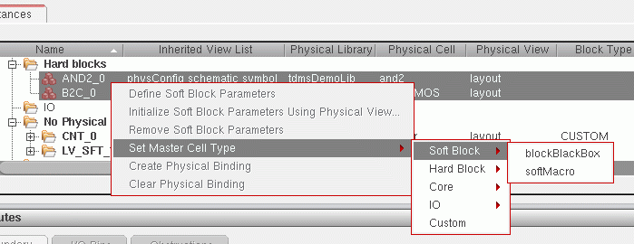

Setting the Cell Type
Cell types are used to categorize the blocks in your design.Valid settings for soft blocks are.
The cell type is automatically set to the appropriate value for any existing soft blocks in the design. To set the cell type for a soft block that has not yet been generated:
-
In the Instances table, select the instance for which you want to set the cell type.
-
Click the right mouse button and choose Set Master Cell Type.
A submenu opens showing the cell types you can set.
 -
Set the cell type of your soft block to either blockBlackBox or softMacro as required.
The instance is moved into the Soft blocks bin, unless it was stored there already, and the following information message, CPH-1014, is displayed in the CIW:
CellType for the Lib/Cell/View, '%s/%s/%s', has been changed to '%s’
Irrespective of the cell type you choose to apply for the selected instance, the information message is displayed when the master cell type has been set.
Related Topics
Soft Block Mode in the CPH Window
Return to top